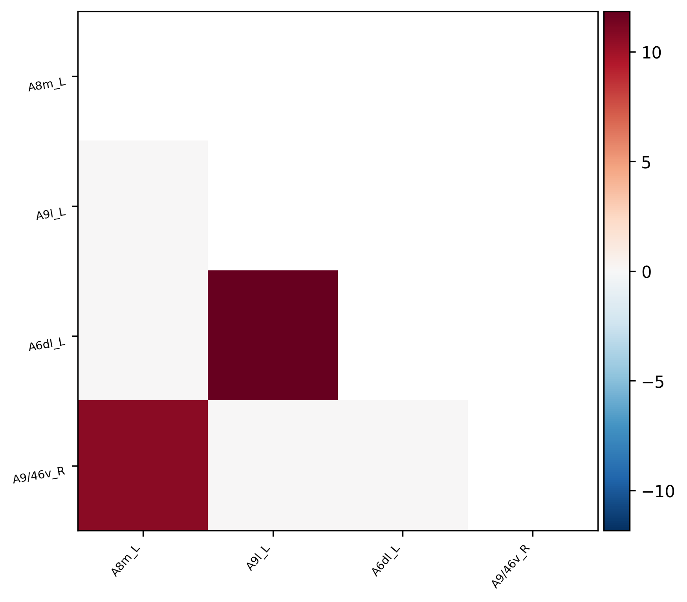
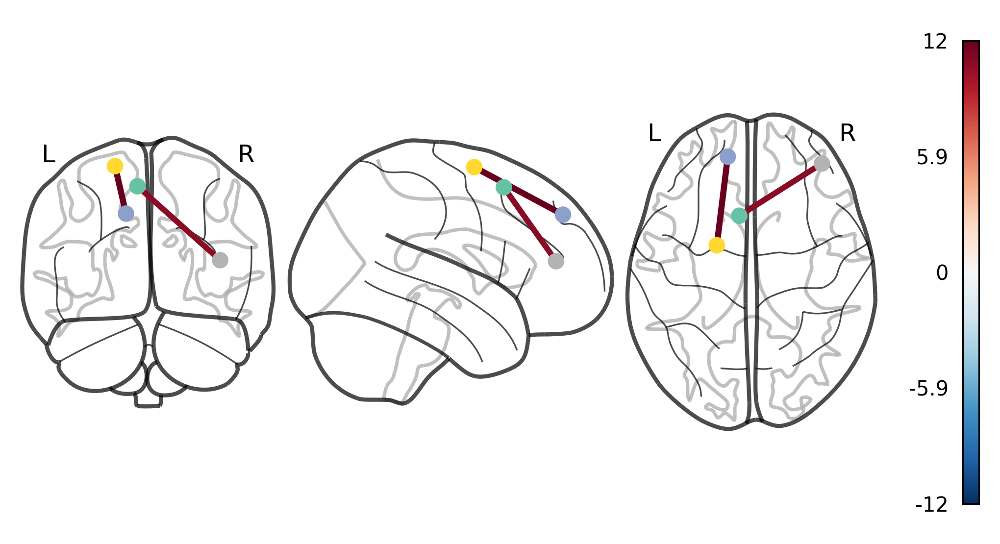

| Parameter | Value |
|---|---|
| Data Type | matrix_sample |
| Model Number | Model_01 |
| Model Equation | lmer(Yvar ~ group + age + age2 + sex + (1|site)) |
| Effect of Interest | group |
| pFDR Threshold | 0.05 |
| Number of Nodes | 246 |
| Number of Significant Connections | 2 |
| Number of Nodes with Significant Connections | 4 |
| File Type | Path |
|---|---|
| Statistics File | Results/matrix_sample/Mega/TIDY/statistic/group/OUT_Model_01.csv |
| P-value File | Results/matrix_sample/Mega/TIDY/p.value.fdr/group/OUT_Model_01.csv |
| Node Labels File | /mnt/munin/Morey/Lab/Delin/Projects/IBMMA/IBMMA_test/sample_data/tpl-MNI152NLin2009cAsym_atlas-brainnetome_dseg.txt |
| Atlas File | /mnt/munin/Morey/Lab/Delin/Projects/IBMMA/IBMMA_test/sample_data/tpl-MNI152NLin2009cAsym_atlas-brainnetome_dseg.nii.gz |
| Output Directory | Reports/matrix_sample/Mega/group/Model_01 |
Statistical analysis was conducted using the Image-Based Mega- and Meta-Analysis (IBMMA) framework for neuroimaging region-of-interest (ROI) connectivity analysis. The analytical approach employed a comprehensive examination of functional connectivity patterns between ROIs based on the specified atlas parcellation.
All statistical comparisons were performed using two-tailed statistical tests with false discovery rate (FDR) correction to account for multiple comparisons across the connection matrix. Only connections that survived the statistical threshold of pFDR < 0.05 were included in subsequent analyses and visualizations, ensuring rigorous control of Type I error while maintaining appropriate sensitivity to detect biologically meaningful effects.
Visualization of the thresholded connection matrices and three-dimensional brain connectome representations was implemented using the Nilearn package in Python. Matrix visualizations were generated with a divergent color scheme to illustrate the directionality and magnitude of significant associations, while connectome visualizations employed standardized Montreal Neurological Institute (MNI) space coordinates to accurately represent the spatial configuration of significant interregional connections.
| Variables | Missing | Overall | 0 | 1 | P-Value | Test | |
|---|---|---|---|---|---|---|---|
| n | 24 | 12 | 12 | ||||
| age, mean (SD) | 0.0 | 42.500 (13.835) | 39.076 (13.141) | 45.924 (14.210) | 0.233 | Two Sample T-test | |
| age2, mean (SD) | 0.0 | 1989.674 (1187.769) | 1685.243 (1057.527) | 2294.104 (1276.431) | 0.217 | Two Sample T-test | |
| sex, mean (SD) | 0.0 | 0.500 (0.511) | 0.500 (0.522) | 0.500 (0.522) | 1.0 | Two Sample T-test |
Note: Group comparisons of demographic and clinical variables.
| SITE | n | group, mean (SD) | age, mean (SD) | age2, mean (SD) | sex, mean (SD) |
|---|---|---|---|---|---|
| Missing | 0.0 | 0.0 | 0.0 | 0.0 | |
| Overall | 24 | 0.500 (0.511) | 42.500 (13.835) | 1989.674 (1187.769) | 0.500 (0.511) |
| 1 | 8 | 0.500 (0.535) | 41.277 (11.285) | 1815.235 (899.662) | 0.500 (0.535) |
| 2 | 8 | 0.500 (0.535) | 47.880 (15.074) | 2491.352 (1349.895) | 0.500 (0.535) |
| 3 | 8 | 0.500 (0.535) | 38.342 (14.825) | 1662.435 (1248.628) | 0.500 (0.535) |
Note: Distribution of variables across different sites.

Figure 1: Thresholded statistical matrix of interregional connectivity (pFDR < 0.05). Only nodes with at least one significant connection are shown (4 out of 246 total nodes). The lower triangular matrix displays significant connections, with color hue representing the direction of statistical effects and color intensity corresponding to the magnitude of test statistics. Non-significant connections are omitted.

Figure 2: Three-dimensional visualization of significant connections between brain regions (pFDR < 0.05). Only nodes with at least one significant connection are shown (4 out of 246 total nodes). Edge colors represent the direction and strength of statistical associations between connected regions.
| # | Node 1 | Node 2 | Statistic | pFDR |
|---|---|---|---|---|
| 1 | A9l_L | A6dl_L | 11.836 | 0.000 |
| 2 | A8m_L | A9/46v_R | 10.659 | 0.000 |
Note: Table shows all significant connections ranked by absolute magnitude of test statistics. The complete set is also available as a CSV file: significant_connections.csv.